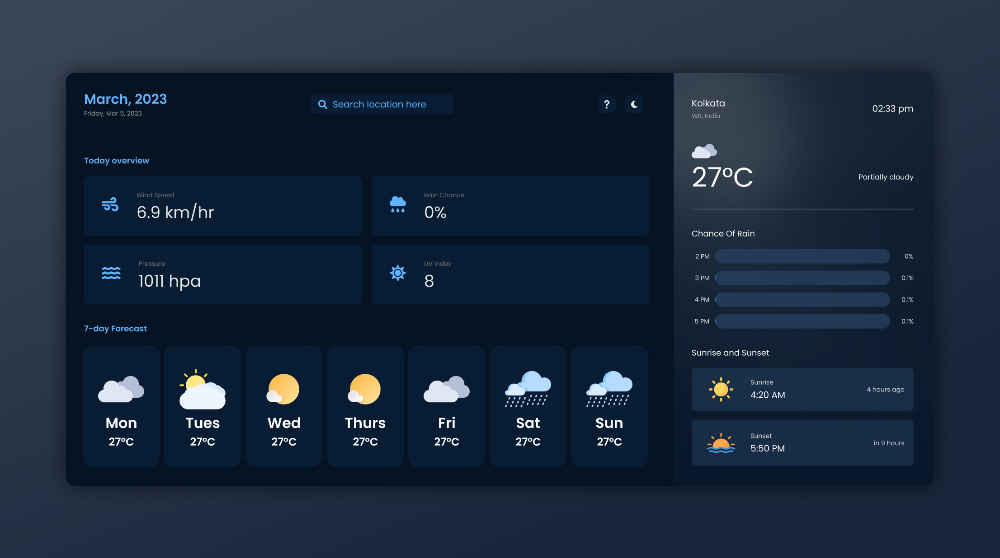

The Weather App
About this project
Introducing my weather dashboard, built with HTML, Tailwind CSS, and JavaScript! This web application provides you with real-time weather updates for your selected location, along with a variety of other useful features. The dashboard has a simple and user-friendly design, allowing you to easily view and access the information you need. It has a clean and modern layout, with a responsive design that adapts to different screen sizes and devices.
At the top of the dashboard, you can select your location by entering the city or zip code. Once you have entered your location, you will be presented with a summary of the current weather conditions, including the temperature, , wind speed, UV Index and more. You can also view a detailed hourly or daily forecast, allowing you to plan your day or week ahead. The dashboard is built using Tailwind CSS, a popular utility-first CSS framework that allows for easy customization and styling. The use of JavaScript allows for dynamic updates and interactivity, such as dark and light mode, etc.
Overall, our weather dashboard provides you with all the weather information you need in a simple and easy-to-use interface. Whether you are planning your day or simply want to stay informed about the weather in your area, our weather dashboard has you covered.
Developed By Priyobroto Kar.
Technical sheet
The languages used for this project are:
- HTML
- Tailwind CSS
- Vanilla JavaScript
The APIs used for this project are:
- Geolocation-db : https://geolocation-db.com/
- Visual Crossing Weather : https://www.visualcrossing.com/weather-api/a>
- Geo DB : http://geodb-cities-api.wirefreethought.com/